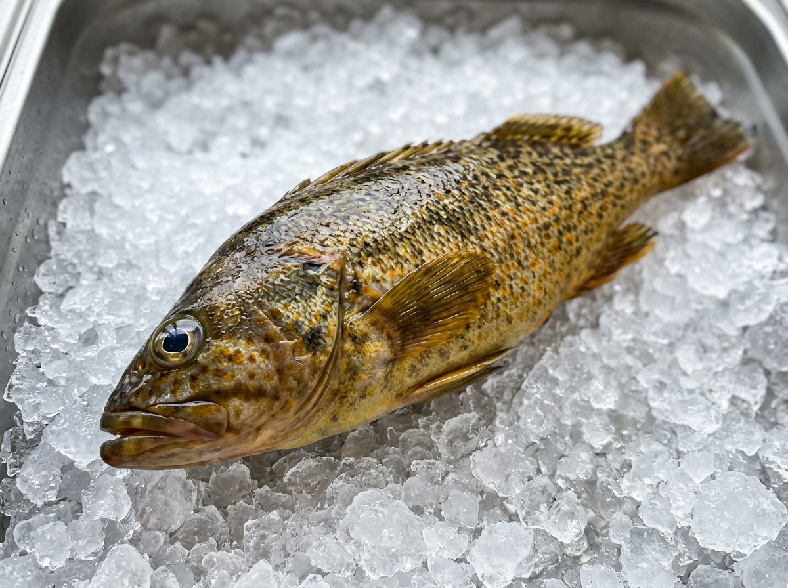

PARTE 2 • ÉTICA Y DATOS
Parte 2: Fundamentación de Sostenibilidad y Ética
3 Compromisos Éticos y Verificación Rigurosa de Datos Reales vs Proyecciones
Los 3 Compromisos Éticos Innegociables:
Compromiso Ambiental
Reducción de residuos biológicos al 1.2% mediante temperatura continua a 1.4 °C y descarte cero por descomposición. Cumplimiento estricto de vedas biológicas y tallas mínimas PRODUCE.
Compromiso Social
Trato justo, inclusión y erradicación del "machete" en el pesaje. Comisión cero al pescador artesanal: el 100% del precio de playa pactado va directo a su cuenta digital.
Compromiso Económico
Continuidad y transparencia financiera. La empresa no especula con la comida popular: cobra una tarifa logística fija y justa por kilo transportado (S/ 1.50/kg).
Demostración y Sustentación de Datos Reales vs. Proyecciones:
| Variable del Proyecto | Categoría de Dato | Valor Sustentado | Fuente / Método de Validación |
|---|---|---|---|
| Volumen en Piloto | DATO REAL AUDITADO | 6,850 kg transaccionados | 15 jornadas reales en DPA Paita (137 despachos) |
| Ahorro en Cebicherías | DATO REAL AUDITADO | -31.8% verificado | Facturación real comparada con Cebichería "El Cántaro" |
| Temperatura en Ruta | DATO REAL AUDITADO | 1.4 °C promedio | Log de telemetría IoT celular (sensores DS18B20) |
| Ingresos Año 1 | PROYECCIÓN TÉCNICA | S/ 243,000.00 | Modelo financiero basado en 45 cebicherías recurrentes |
| VAN y TIR | PROYECCIÓN TÉCNICA | VAN S/ 285k • TIR 142% | Flujo de caja descontado a 3 años (tasa COK 12%) |